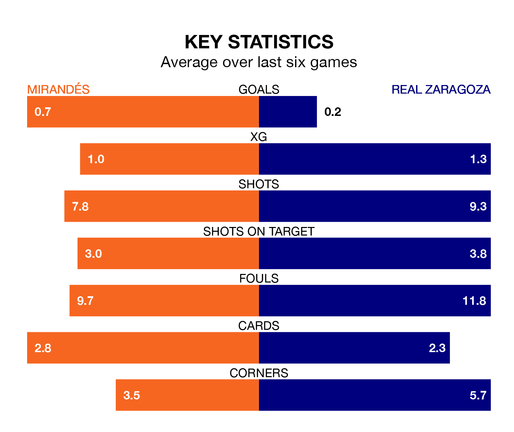

Mirandés and Real Zaragoza both come into Sunday's late kick-off at Estadio Municipal de Anduva in poor form, having picked up three and one points respectively in their last six games.
Mirandés have won just one of the last six, while Zaragoza have taken just one draw.
In the last 10 years, Mirandés and Zaragoza have played each other on 15 occasions. Mirandés won seven of them, Zaragoza three, and they drew five times.
On average, Mirandés scored 1.0 goal and Zaragoza 0.7 in those matches.
Their last meeting was on October 1, when Mirandés won 1-0 away.
In Carlos Martín, Mirandés have one of the league's most on-form strikers so far this season. He has notched 13 goals in 29 appearances, to sit third in the scoring charts.
His goal rate of one every 158 minutes is quicker than that of Maikel Mesa Piñero, Zaragoza's top scorer with a goal every 268 minutes, and a total of eight goals in 30 games.
With 28 goals in 31 games so far this season, the away side are scoring at below the league average rate with 0.9 goals per game. But they are conceding fewer than average too, letting in 29 goals at a rate of 0.9 per game.
The hosts, meanwhile, are above average scorers, with 1.2 goals per game, compared to a league average of 1.1. They have conceded 1.4 goals per game.
Mirandés are 16th in the table after 31 games, of which they have won nine and drawn nine, earning 36 points.
Zaragoza are one place ahead of Mirandés in 15th, with nine wins and 10 draws putting them on 37 points.
Mirandés's last match was on March 17, a 4-0 loss against Leganés.
Zaragoza lost 1-0 against RCD Espanyol last time out, also on March 17.
Updated: 10:19 (UTC), 22/03/24